Projects
Simulation, controls, mechanical design and experimental work.
-
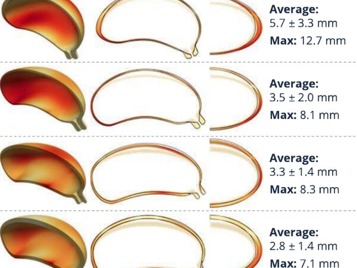
Multi-patient uterine mechanics
A verified single-patient framework scaled to five patients — and tested to see whether its tuned parameters survive the move.
-
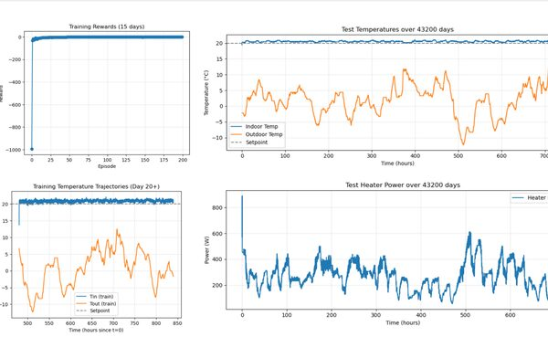
Reinforcement learning for building heating control
Soft Actor-Critic agents in FMU co-simulation, for fixed and occupancy-scheduled setpoints. Code included.
-
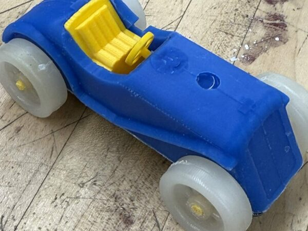
Cast and injection-molded model car
Silicone casting from printed molds, and injection molding from CNC-machined aluminum tooling.
-
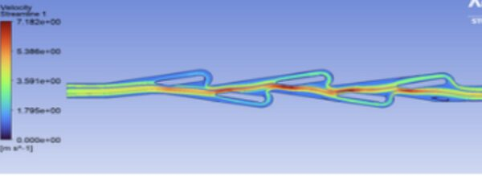
Tesla valve CFD analysis
Diodicity across Reynolds number, validated against published data — plus a redesign that made it worse.
-
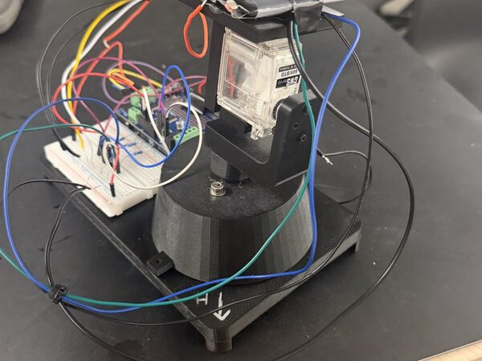
Dual-axis solar tracker
Built, found unstable, rebuilt around scan-and-sweep control. Aligned in eight of nine test positions.
-
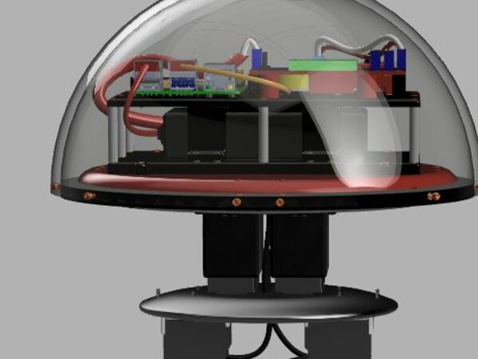
Bi-pedal jumping robot
Sketches through two CAD iterations. The redesign added 19% mass in actuation and doubled design speed — because springs alone can’t jump.
-
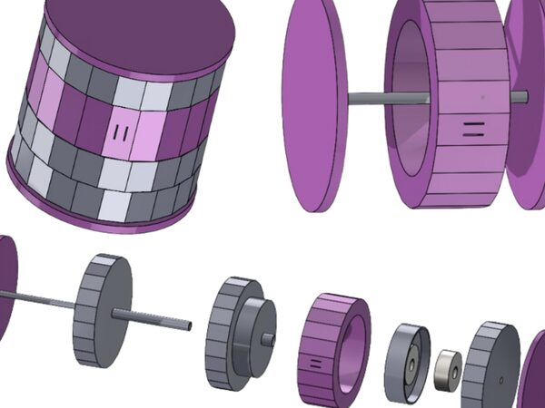
Math Mouse mechanical calculator
A children’s arithmetic toy with no electronics and no removable part, built on two opposed one-way bearings.
-
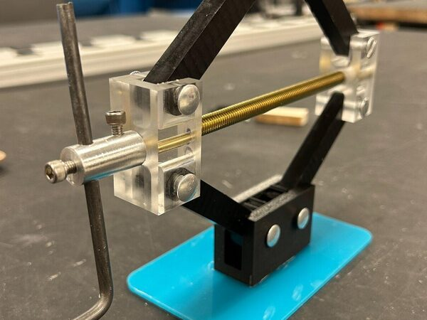
Machined scissor jack
A working lead-screw jack across four processes — CNC mill, bandsaw, drill press and laser cutter.
-
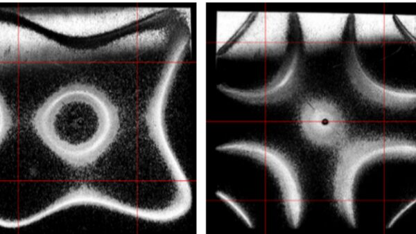
Chladni plate modal characterization
Six vibrational modes identified two ways, with errors from 1.4% to 26.8% — and an explanation for the spread.
-
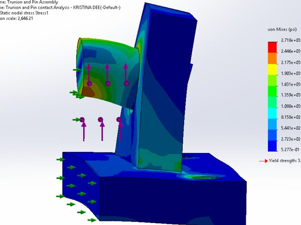
FEA studies
Stress concentration with mesh convergence, an interference fit, and a contact analysis.
-
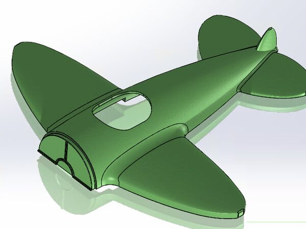
CAD and drawing studies
Surface modeling, a complete drawing package with GD&T and BOM, and a weight-driven structural part.
-
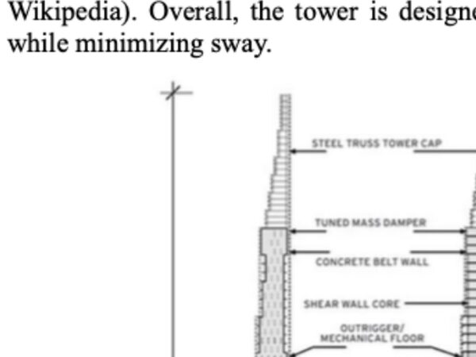
Supertall tower aerodynamics
Why a superslim tower needs a tuned mass damper, worked out analytically on a simplified model.
-
Cryotherapy as a heat transfer problem
A review of bioheat transfer and latent heat in freezing tissue, across the clinical range of cold therapy.